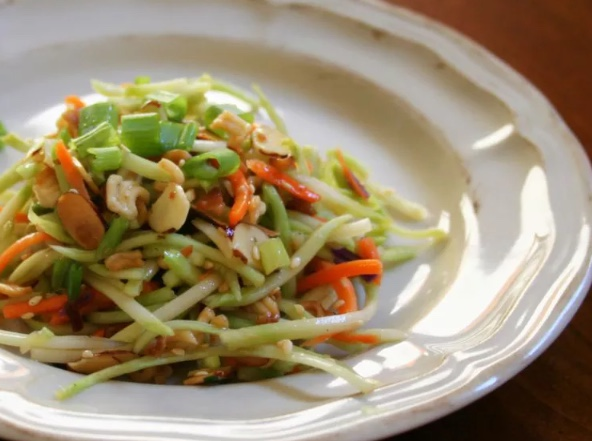

Crunchy Ramen Broccoli Slaw

Crunchy Ramen Broccoli Slaw is a unique and flavorful salad that combines the crispiness of ramen noodles with
the freshness of broccoli slaw. This inventive dish starts with a base of shredded broccoli stems, carrots, and
cabbage, providing a vibrant mix of colors and textures. The slaw is then elevated with the addition of crunchy
ramen noodles, which are toasted to perfection for an irresistible texture. The noodles are accompanied by a
delectable dressing made from a blend of soy sauce, vinegar, sesame oil, and a touch of honey or brown sugar,
creating a perfect balance of savory and sweet flavors. Tossed together, the result is a refreshing salad with a
satisfying crunch that offers a delightful combination of tastes and textures. Whether enjoyed as a light lunch
or a side dish at a gathering, the Crunchy Ramen Broccoli Slaw is sure to impress with its unique twist on
traditional slaw recipes.
Ingredients
- ¼ cup butter
- 2 (3 ounce) packages Oriental-flavor ramen noodle soup, seasoning packet reserved
- ½ cup slivered almonds
- ¼ cup sesame seeds
- 1 (16 ounce) package broccoli coleslaw mix
- ½ cup chopped green onion
Dressing
- ½ cup salad oil
- ½ cup white sugar
- ¼ cup apple cider vinegar
- 2 tablespoons soy sauce
Directions
- Preheat the oven to 350 degrees F (175 degrees C).
- Melt butter in a microwave-safe bowl in the microwave. Crush ramen noodles into small pieces; stir crushed
noodles, almonds, and sesame seeds into melted butter. Spread mixture onto a baking sheet.
- Bake in the preheated oven until golden brown and crunchy, 8 to 10 minutes; allow to cool completely.
- Toss together coleslaw mix and green onion in a large serving bowl.
- Make dressing: Whisk together oil, sugar, vinegar, soy sauce, and reserved seasoning packets in a separate
bowl until well combined.
- Stir cooled noodle mixture into dressing. Pour dressing over coleslaw-onion mixture; toss to coat.